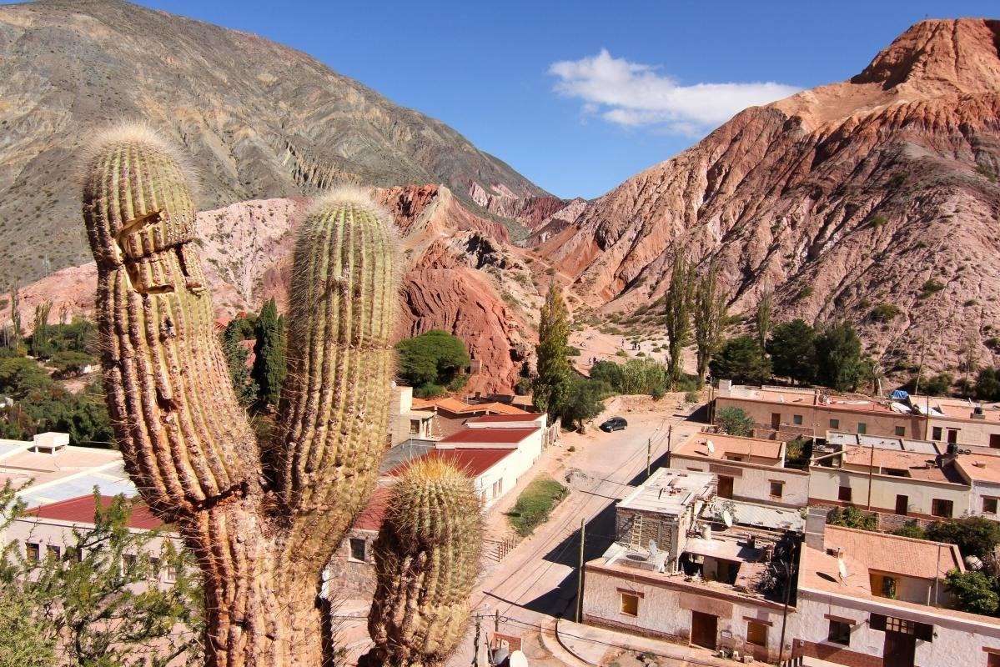
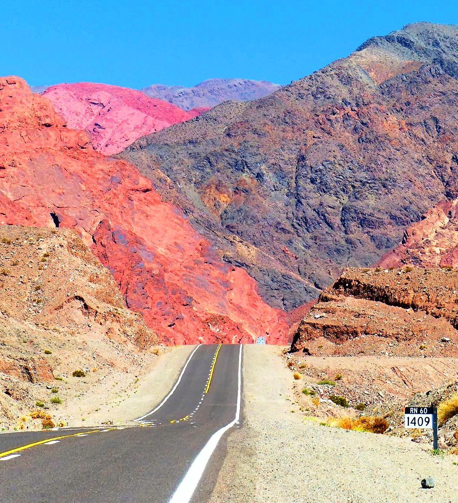

San Juan

Un recorrido enoturístico incomparable, producto de una encantadora unión de vitivinicultura destacada y paisajes inigualables.
Mendoza
Ciudad de la región de Cuyo en Argentina y es el corazón de la zona vitivinícola argentina, famosa por sus Malbecs y otros vinos tintos.
Salta
"Circuito turístico-temático" donde puede observar, comprender y conocer la historia, el desarrollo y el funcionamiento actual de la actividad vitivinícola.
La Rioja


La combinación del clima, suelo y relieve, y una acertada genética dió lugar a variedades de uvas reconocidas internacionalmente.
Neuquén
Una notable concentración de color, alto nivel de fruta en los aromas, gran cuerpo y estructura. Malbec, Cabernet Sauvignon, Merlot, Pinot Noir y Chardonnay.
Río Negro


Una combinación de tradición productiva centenaria con condiciones naturales excepcionales para la elaboración de los vinos de alta gama.
Catamarca
Recorrido enoturístico místico sobre rutas de Adobe, mágicas ruinas aborígenes de piedra y barro, y fuertes huellas de culturas precolombinas.